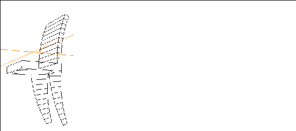
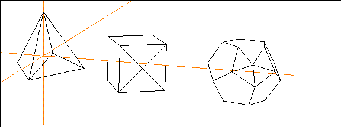

[N-World Contents] [Book Contents] [Prev] [Next] [Index]
Adding Geometry
In this chapter, we'll describe some techniques for adding detail to selected areas of an object.
In this Chapter
We'll describe some of the commands that you typically use to add geometry to an object, including:
When do you need to add geometry? If you remember the concept of "virtual clay" from our overview of N-Geometry, you know that the surface of the model always remains solid on an object created in N-Geometry.
In general, you need to add geometry in the following cases:
However:
An N-Geometry object is a closed surface of polygons. If you need to add more detail in a particular area of a model, you need to be able to "insert" additional points, segments, or faces directly onto this "closed surface." In this chapter we'll discuss some of the more common tools for doing just that.
Cut
The Cut command has two basic uses:
Building a Chair
When do you need to cut a face?
For this example, let's try building a chair from a cube primitive; you'll be able to see where the cut operation can be used on both segments and faces.
1. Create a cube.
2. (SHIFT-L) on the bottom face of the cube, then (CLICK-M) on Select Elements.
- The segments on the bottom face are selected.
3. (SHIFT-L) on the collection, then (CLICK-M) on Cut.
- This cuts each of the collected segments into thirds.
Figure 11.1 Segments on the bottom face cut into thirds
4. (SHIFT-L) on the bottom face, then (CLICK-L) on Cut.
Figure 11.2 Select the face you want to cut
5. Move the cursor over the selected face.
- As you do, different points along the face are selected.
6. There are two vertices on the segment along the front of the cube. (CLICK-L) on the vertex to the right.
7. Now, (CLICK-L) on the vertex just on the other side of the corner.
- This creates a triangular face, as shown below:
Figure 11.3 Select the face you want to cut
8. Now, repeat the Cut operation for the other corners.
- Your object should look like this when you're done:
Figure 11.4 Make three more cuts like the first
Now, move the camera so that you're looking at the top of the cube.
9. (SHIFT-L) on the top face, then (CLICK-L) on Axis Move.
- Move the face down so that the object has the dimensions of a seat cushion.
Figure 11.5 Axis Move the top of the cube
10. (SHIFT-L) on one of the segments along the side of the cushion, then (CLICK-R) on Cut.
- Your cursor "locks" onto the segment. Move the mouse left and right until the cursor is almost at the back of the cushion, then (CLICK-L).

Figure 11.6 Cut the segment almost at the back of the cushion
11. Make a similar cut on the other side of the cushion.
- Don't worry if the two aren't at exactly the same location along the Z axis; we'll fix that in a minute.
12. (SHIFT-L) on the top face, then (CLICK-L) on Cut.
- Cut the top face between the two vertices you just created, so that your object looks something like this:
Figure 11.7 Cutting the top face
To straighten out this cut, let's use the Flatten command.
13. (SHIFT-L) on one of the vertices at the ends of the cut you just made, then (CLICK-L) on Flatten.
14. (CLICK-L) on Z for the axis to Flatten along.
15. (CLICK-L) on the corresponding vertex on the other side of the cushion.
- The cut should straighten out:
Figure 11.8 Straightening the cut
Now we can use the Multiple Extrude operation to pull out the back and legs of our chair.
16. (SHIFT-L) on face you created with the cut operation.
Figure 11.9 Choosing the face to extrude
17. (CLICK-L) on Multiple Extrude.
- The Multiple Extrude dialog box appears.
18. (CLICK-L) on Add.
19. (CLICK-L) on Extend.
- Specify a dist of 25 and exp of none.
20. (CLICK-L) on Add.
21. (CLICK-L) on Rotate.
- Specify an angle of -25, axis of X and exp of none.
22. (CLICK-L) on the Extrude button.
- Your chair should now look something like this:
Figure 11.10 Extruded back
23. Move the camera back so that it's pointed at the bottom of the chair again.
24. Collect the two triangular faces at the back of the chair bottom.
Figure 11.11 Collect the back faces on the chair bottom
25. (CLICK-L) on Multiple Extrude.
- The Multiple Extrude dialog box appears. We need to make a couple of changes and add one more operation to the multiple extrude to make the back legs.
26. (CLICK-L) on Add.
27. (CLICK-L) on Scale.
- Your chair should now look something like this:

Figure 11.12 Extruded back legs
- Don't worry about the bottom of the legs-we'll Flatten them out later.
28. Collect the triangular faces for the front legs and (SHIFT-L), then (CLICK-L) on Multiple Extrude.
29. You can use the same parameters you used to pull out the back legs, with one exception:
- Your chair should now look like this:
Figure 11.13 Extruded back legs
30. Now, collect the four feet on the bottom of the chair legs.
31. (SHIFT-L) on the collection and (CLICK-L) on Flatten.
32. Choose the lowest point on one of the chair legs.
33. (CLICK-L) on Y for the axis to flatten along.
- The feet should all flatten out:
Figure 11.14 Flattened feet
34. (CLICK-L) on GeoMenus>Object Display>Shading>Cube to shade the object:
Figure 11.15 Shaded chair
Edge Subdivide
The Edge Subdivide command adds geometry by cutting a face from the midpoint of each edge to the face's midpoint.
Try this:
1. (CLICK-L) on GeoMenus>File>New Object.
2. (CLICK-R) on Grid.
3. (CLICK-L) on the Make Grid button.
- Your grid should look something like this:
Figure 11.16 Create a grid
Now, suppose that you pulled up some mountains on the grid as described in the tutorial on magnet moves:
Figure 11.17 Create a grid
What if you really liked the mountains, but wanted to pull up a small city full of buildings using the foreground of the grid? Right now, you don't have enough detail.
Even if you didn't create any mountains, continue on with these steps:
4. Zoom in on the grid.
5. Collect several faces on the grid.
Figure 11.18 Select several faces on the grid where you want to add some buildings
6. (SHIFT-L) on the collection, then (CLICK-L) on Edge Subdivide.
- Each of the collected faces is cut from its edge to the face midpoint. The old face is converted into a number of faces equal to the number of edges on the original face.
Figure 11.19 Edge Subdivided faces
7. Collect several of the smaller faces and Edge Subdivide them.
Figure 11.20 Edge Subdivide some of the faces again
8. Now, use the Extrude and Multiple Extrude tools to pull up the faces into a small city.
Figure 11.21 By adding detail, you can change the relative scale of an object
Of course, Edge Subdivide will work on any face with any number of sides:
9. Create a tetrahedron, a cube, and a dodecahedron.
10. Select objects in the element sensitivity menu, then use Axis Move>X to spread the objects out.
11. Collect the faces shown below:
Figure 11.22 Edge Subdivide creates a number of faces equal to the number of segments on the face
12. (SHIFT-L) on the collection, then (CLICK-L) on Edge Subdivide.
- The faces are inscribed like this:
Figure 11.23 Faces are inscribed from the midpoint of each edge to the face
midpoint
Vertex Subdivide
Vertex Subdivide also adds geometry by cutting a face. However, instead of cutting the face from the midpoint of each edge, a segment is cut from each vertex to the face's midpoint.
Try this:
1. Create a tetrahedron, a cube, and an dodecahedron.
2. Select objects in the element sensitivity menu, then use Axis Move>X to spread the objects out.
3. Collect the faces shown below:

Figure 11.24 Vertex subdivide creates a number of faces equal to the number of vertices on the face
4. (SHIFT-L) on the collection, then (CLICK-L) on Vertex Subdivide.
- The faces are inscribed like this:

Figure 11.25 Faces are inscribed from each vertex to the face midpoint
Vertex subdivide is handy if you want to pull out a "spike" from a face:
5. (SHIFT-L) on the vertex on the face midpoint of one of the objects, then (CLICK-L) on Axis Move:
Figure 11.26 Use axis move to lift the face out
Bevel
Beveling an edge or vertex replaces that element with a face aligned with the vertex or edge's normal. You can think of a Bevel operation as slicing off a corner or edge of an object.
Beveling a polyhedron bevels all its edges, or all edges that exceed a specified degree of acuteness.
Beveling a Point
Try this:
1. Create a cube.
2. (SHIFT-L) on one a vertex on one of the corners, then (CLICK-L) on Bevel.
- The following dialog box appears:
Figure 11.27 Bevel parameters
3. (CLICK-L) on the Bevel button.
- The corner is "cut off" or beveled. You can specify different Bevel Width values to bevel more or less:
Figure 11.28 Beveled point, using Bevel width of .25, .33, and .4.
Of course, you're not limited to beveling points on the perimeter of an object. If you bevel a point in the middle of a flat surface, for example, you'll get this result:
Figure 11.29 Beveled point, using Bevel width of .25, .33, and .4.
The resulting face can then be extruded, scaled, and modified.
Beveling a Segment
Beveling a segment affects only that edge:
4. Create a cube.
5. (SHIFT-L) on one an edge of the cube, then (CLICK-L) on Bevel.
Figure 11.30 Beveled edge
If you bevel an edge in the middle of a flat surface, you get the following result:
Figure 11.31 Left, selected edge; right, same edge beveled
Beveling a Body
When you bevel an entire body, it has the effect of "sanding all the sharp edges down;" both edges and points are beveled:
6. Create a cube.
7. (SHIFT-L) on the cube, then (CLICK-L) on Bevel.
Figure 11.32 Beveled body
There are additional beveling methods that can be employed in N-Geometry, as described in the N-Geometry Reference Guide. The techniques described in this chapter, however, give you a good working knowledge of how to use the bevel command.
Smooth
The Smooth function is one of N-Geometry's most powerful features.
This section describes how you can smooth an entire object or different parts of an object, depending on where you want to add detail.
Smoothing an Entire Object
Working even with a simple object like a cube lets you see how the smooth operation adds geometry.
Try this:
1. Create a cube.
Figure 11.33 Start with a cube
2. (SHIFT-L) on the cube, then (CLICK-L) on Smooth.
Figure 11.34 Smooth acts a lot like the bevel command described earlier
3. (SHIFT-L) on the cube again, then (CLICK-L) on Smooth again.
Figure 11.35 Smooth adds geometry to the object each time it is applied
The smooth feature can be used on any object that you create; smoothing even moderately simple objects can have a dramatic effect. For example, look at the plane below to see how a simple object can be smoothed into a much more complex model:
Figure 11.36 Left, original; middle, smoothed once; right, smoothed twice
Smoothing Part of an Object
If you only need to add detail to part of an object, then only smooth that part!
Especially in situations where polygon count is significant, you should only add detail to selected portions of the model.
- Note. You can't smooth a single face.
Suppose you'd drawn a loudspeaker system and wanted to smooth the horn portions:
1. Collect the faces on the area(s) you want to smooth.
Figure 11.37 Collect the faces to smooth
2. (CLICK-L) on Smooth.
- Only the selected areas are smoothed.
Figure 11.38 After one smooth
3. (CLICK-L) on Smooth again.
- Again, no detail is added to the "box" portion of our speaker system, only to the horns:

Figure 11.39 After one smooth
Smoothing Tips
When you're building a model in N-Geometry, it's a good thing to know if you eventually plan to smooth the model or not.
In particular, you should keep in mind that when you smooth an object, N-Geometry pays particular attention to hard edges when figuring out just how to smooth the object.
Let's look at an example:
Suppose that in the previous example (our loudspeaker) that we had created the object like this:
1. Add a cube.
2. Extrude the sides twice.
3. Select the edge loops closest to the ends (but not the end loop).
4. Scale the collected segments.
Figure 11.40 After one smooth
If we were to smooth this entire object, we'd get some results that you might not expect:
Figure 11.41 After one smooth
What happened to our hard edges? The rather well defined "joints" near each end of our object were smoothed into a long, straight section. Also, the ends of our object were scaled quite a bit as well. While this is mathematically accurate, you may want to keep a little more of the original object's shape.
Try this:
5. Start with a new cube.
6. Extrude the faces on each side once.
7. Now, make another very narrow extrusion so that your object looks like this:
Figure 11.42 Make a small extrusion
8. Extrude the faces again.
9. Make a final very narrow extrusion, so that your object looks like this:

Figure 11.43 Extrude again, then make another tiny extrusion at the end of the object
10. Select the segments in all four edge loops that make the final "joint."
Figure 11.44 Select the segments around both "joints"
11. (SHIFT-L) on the collection, then (CLICK-L) on Scale to scale down the segments:
Figure 11.45 Object with scaled "joints"
12. Now, (SHIFT-L) on the body and (CLICK-L) on Smooth.
- Your results should look something like this:
Figure 11.46 Smoothed object
Compare this result with the diagram in Figure 11.41; note that the scaled "joints" are maintained, and the object ends are kept closer to their original scale.
Congratulations!
You've learned some additional techniques for adding geometry to local areas of an N-Geometry object. The cut, bevel, edge subdivide, vertex subdivide, and smooth commands can all be used to add geometry to parts of an object, or to change the appearance and topology of the entire object.
[N-World Contents] [Book Contents] [Prev] [Next] [Index]
 Another fine product from Nichimen documentation!
Another fine product from Nichimen documentation!
Copyright © 1996, Nichimen Graphics Corporation. All rights
reserved.